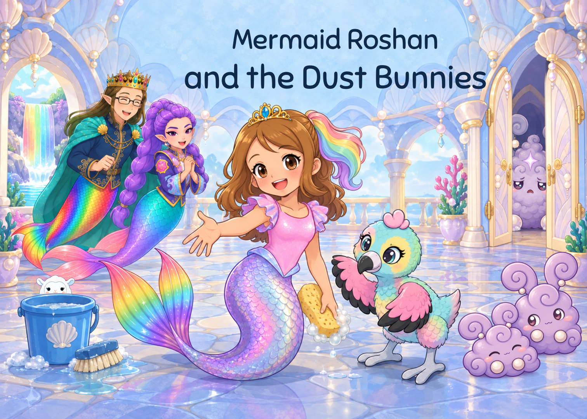

Two opened leaves, four complete hinges and paired inner handles. Original central Puff/family remain. Title moved as one block to clear the new tip.

Full34-entry audit: two inherited continuity issues remain open · Read book · Independent review
First repair brought the left tip too close to the title. Both title lines now shift20logicalpt left. The earlier proof is explicitly reconstructed with a matching original review hash, not claimed as a retained original PDF.